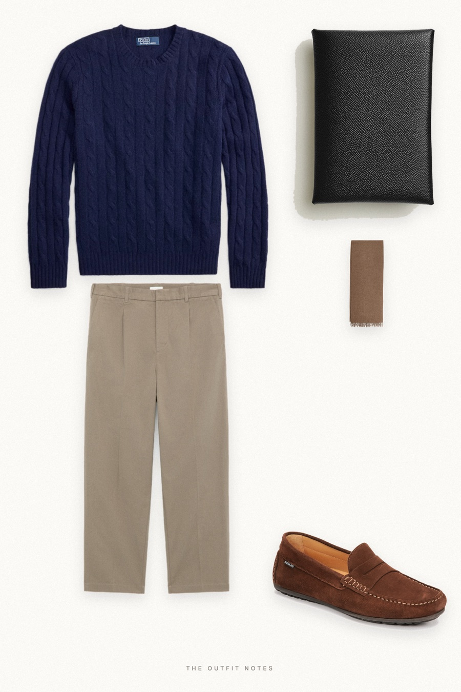

Christmas Navy
the sweater he will keep

Gift ideas for him that actually get worn: Polo Ralph Lauren iconic cable-knit cashmere sweater in navy, mole cotton trousers, cocoa suede loafers, a camel wool scarf and a Hermès Calvi card holder as the finishing touch. What to wear for Christmas dinner, men's edition.
The pieces
This page contains affiliate links: if you buy through them, we may earn a commission at no extra cost to you. Disclosure.
 Polo Ralph Lauren
Polo Ralph Lauren
Navy cable-knit cashmere sweater
Shop ARKET
ARKET
Taupe pleated loose-fit trousers
Shop Pellet
Pellet
Cocoa suede loafers
Shop Hermès
Hermès
Black leather cardholder
Shop ARKET
ARKET
Camel wool scarf
Shop
Prices are indicative, taken when the look was published, and may have changed. Pictures of the outfit are AI-generated illustrations of real products; the product photos are the retailers' own.
Published 1 October 2026.